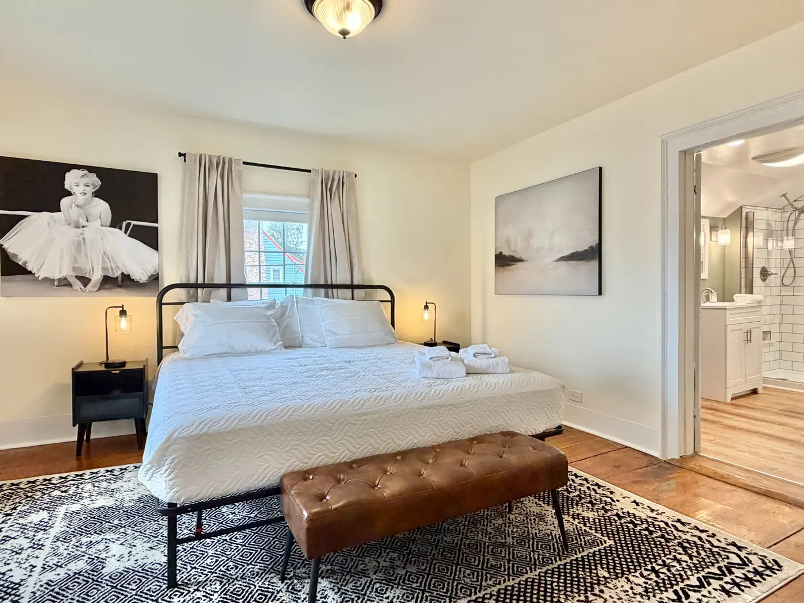
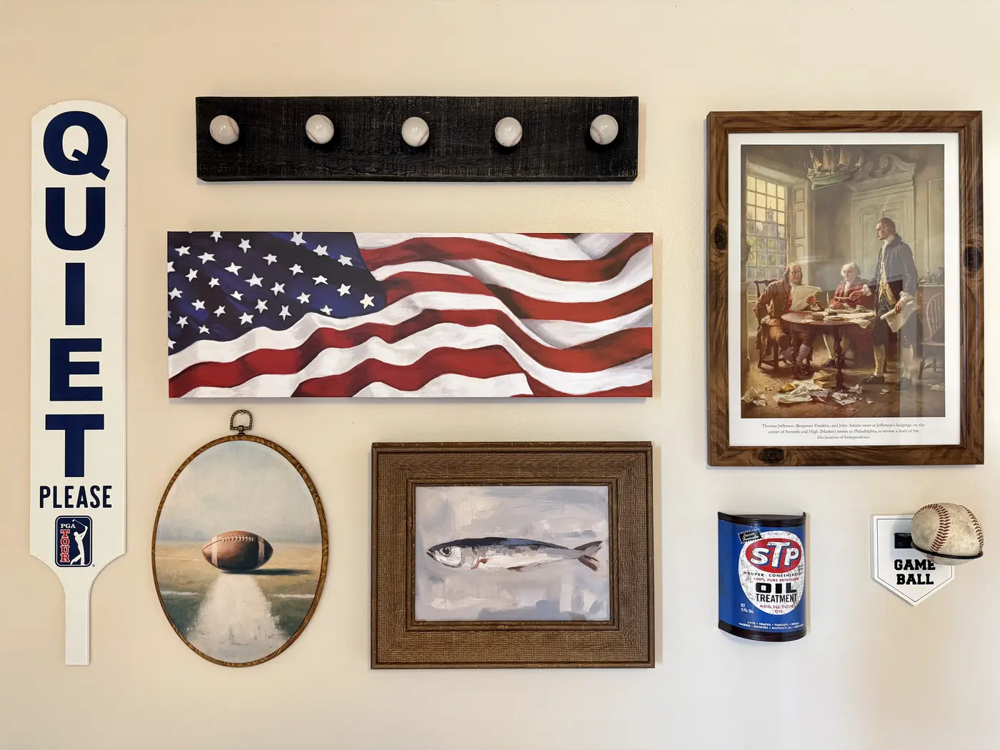
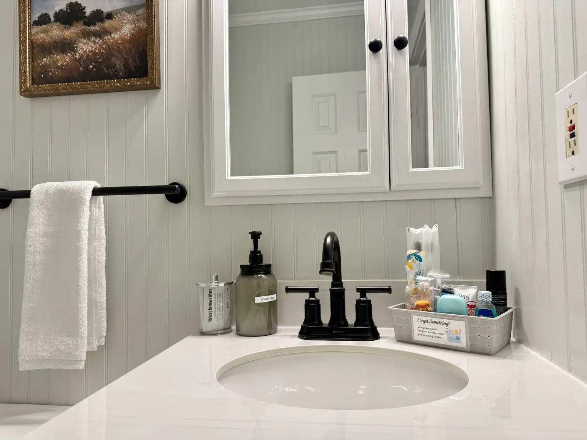

For homeowners
Carefree Hosting
Local rental oversight and thoughtful property care, so your home can reach its potential.
Explore hostingOne family. Three ways to feel at home.
Whether you own a home, need a hand caring for it, or are looking for your next getaway, you’re in the right place.
What brings you here?
A well-cared-for home makes room for good things. Our three connected brands support the people who own it, care for it, and come to enjoy it.
For homeowners
Local rental oversight and thoughtful property care, so your home can reach its potential.
Explore hosting
For a fresh start
Cleaning that fits your home and your life, with a personalized quote for your space.
Find cleaning support
For your next escape
Find a place to settle in, reconnect, and enjoy everything an upstate stay can be.
Plan your getaway
The care behind the welcome
For a homeowner, that means knowing your property is cared for. For a busy household, it means a space that feels manageable again. For a visitor, it means arriving somewhere you can relax.
Different needs. The same thoughtful approach to homes and the people in them.
Meet our hosting approachA cared-for home. A cleaner space. A welcome escape.